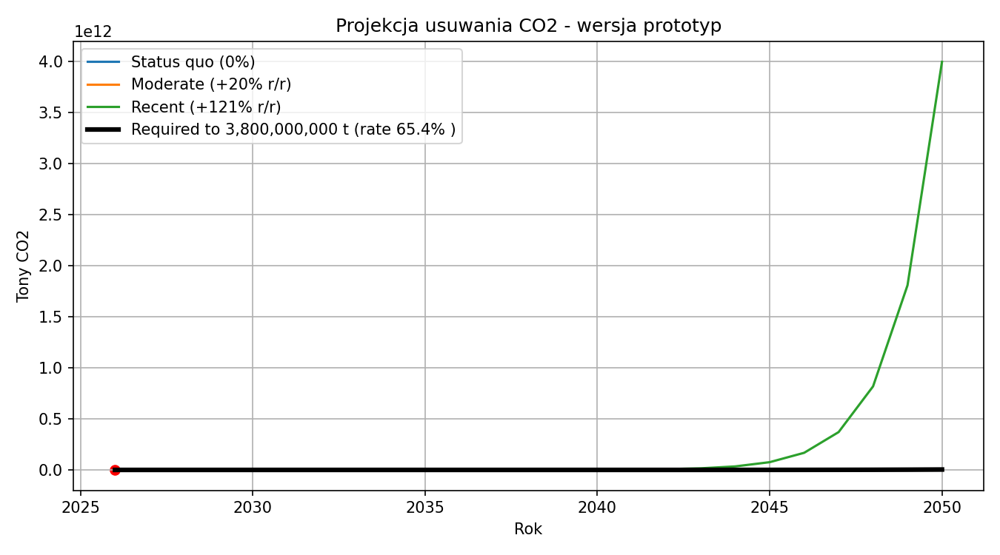
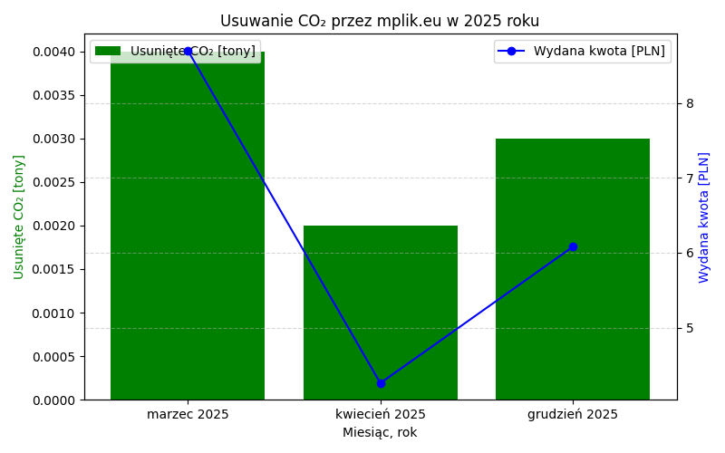
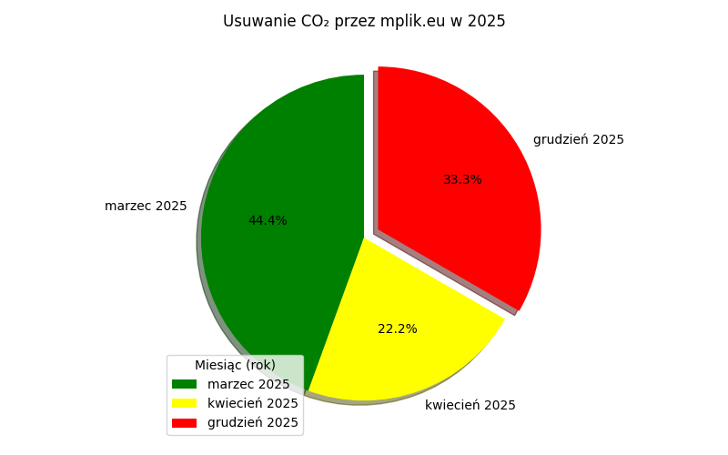

W tej sekcji znajdziesz szczegółowe raporty dotyczące naszych działań związanych z usuwaniem dwutlenku węgla (CO₂) z atmosfery.
Każdy raport zawiera wykresy oraz opisy ilustrujące nasze osiągnięcia w danym roku.
Zachęcamy do zapoznania się z poszczególnymi raportami, aby zobaczyć, jak skutecznie przyczyniamy się do ochrony środowiska w walce ze zmianami klimatycznymi. Zapraszamy również do śledzenia wyników i analizy w kolejnych latach. Dziękujemy za zainteresowanie naszymi działaniami proekologicznymi!
W roku 2025 przeprowadziliśmy 3 operacje usunięcia CO₂ z atmosfery.
Szczegóły przedstawiają poniższe wykresy:



Wykresy prezentują scenariusz od 2025-2050 roku przy aktualnych nakładach na usuwanie co2 przez zaangażowane firmy, ilości usuniętego dwutlenku węgla w poszczególnych miesiącach oraz udział poszczególnych zamówień w całkowitym wyniku roku 2025.
Grudzień został wyróżniony kolorem czerwonym ze względu na szczególne znaczenie tej operacji. Dziękuję.